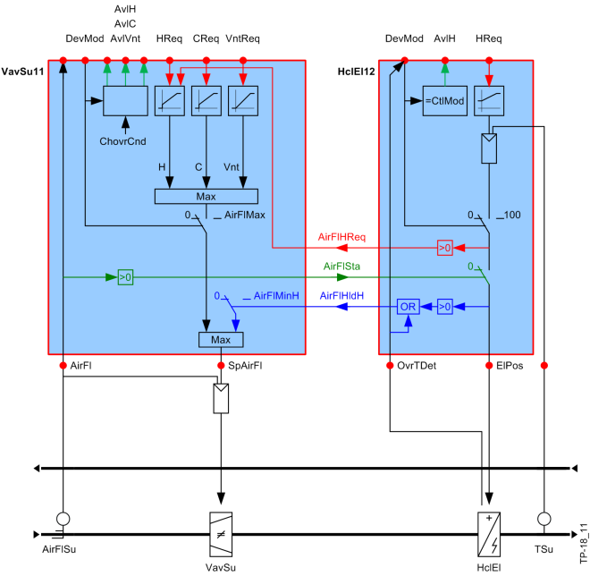

锁具
房间应用程序中的设备之间需要额外的交互。
有两种基本的交互：
- Demand: Heating coils, electric heating coils, and air cooling request that the fan or the VAV box supply the required air volume (red path, AirFlReqHeat and blue path, AirFlHldHeat).
- Lock: The electric heating coils are locked if no air flow exists (green path, AirFlSta).
